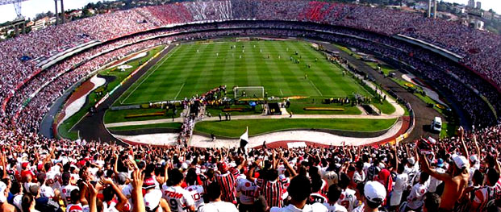

My new post!
My first post!
10 de fevereiro de 2017
The European languages are members of the same family. Their separate existence is a myth. For science, music, sport, etc, Europe uses the same vocabulary. The languages only differ in their grammar, their pronunciation and their most common words. Everyone realizes why a new common language would be desirable: one could refuse to pay expensive translators. To achieve this, it would be necessary to have uniform grammar, pronunciation and more common words. If several languages coalesce, the grammar of the resulting language is more simple and regular than that of the individual languages. The new common language will be more simple and regular than the existing European languages. It will be as simple as Occidental; in fact, it will be Occidental.
Acesse o mundo Tricolor
My second post!
The European languages are members of the same family. Their separate existence is a myth. For science, music, sport, etc, Europe uses the same vocabulary. The languages only differ in their grammar, their pronunciation and their most common words. Everyone realizes why a new common language would be desirable: one could refuse to pay expensive translators. To achieve this, it would be necessary to have uniform grammar, pronunciation and more common words. If several languages coalesce, the grammar of the resulting language is more simple and regular than that of the individual languages. The new common language will be more simple and regular than the existing European languages. It will be as simple as Occidental; in fact, it will be Occidental.